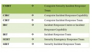
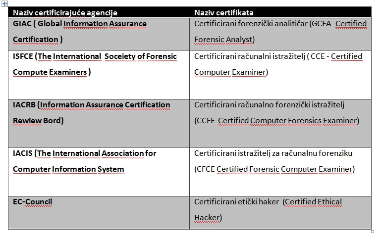
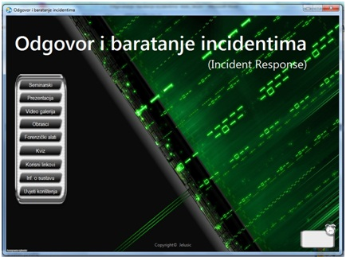
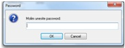

Odgovor i baratanje incidentima
1. Uvod
Članovi tima: Anto Jelušić
Informatički sustava temelj su današnjeg modernog društva na kojemu čovjek danas izgrađuje svoje gospodarstvo, poslovanje i ekonomiju. Upravo kako se događa eksponecijalan rast oslonjenosti ljudi i organizacijskih sustava na informatičke podsustave i informatičku tehnologiju , pojavljuju se i neželjene činjenice a to su računalno-sigurnosni incidenti.
Današnji moderni ljudi i gotovo svi organizacijski sustavi na neki način ovise o računalnoj tehnologiji. Iz toga razloga potrebno je definirati i uspostaviti sigurnosne politike i propise koji će biti vodilja u postupanju se incidentom kada se on dogodi ili čak kada se incident „predosjeti“ (pretpokazivači).
Sigurnosni napadi poslati su sve učestaliji i razorniji za ljude i same poslovne organizacije . Poduzimanje aktivnosti za sprječavanje sigurnosnih prijetnji štite se računalni i mrežni sustavi, a procjenom rizika možemo znatno umanjiti da se ti isti incidenti dogode. Upravo ovo je razlog da organizacija ima ustrojen IRT tim (Incident Response Team) kako bi brzi i ažurnim djelovanjem otkrili; ,analizirali i otklonili takve incidente. Danas timovi za rješavanje incidenata djeluju obično kao dio CERT-a (Computer Emergency Response Team) organizacije zadužene za pružanje potpore u slučaju narušavanja sigurnosti neke tvrtke ili organizacije.
Jedan od napada koji se tretiraju kao ozbiljan incident je Dos napad koji kao posljedicu za organizaciju ima onemogućavanje usluge koju poduzeće nudi , te time ozbiljno utiče na financije iste organizacije. Još pogubnije je ako se radi o napadu koji je uništio ili pak kopirao povjerljive informacije iz sustava.
Ako su takovi napadi koji ugrožavaju integritet poduzeća otkriveni , računalni sustav koji je zadesio incident može se analizirati i pretraživati za dokazima koji će biti iskorišteni u sudskom procesu protiv počinitelja kaznenog dijela. Ove radnje posao su računalnih forenzičara , oni prikupljaju digitalne dokaze koji su ostali nakon ili za vrijem počinjenja kaznenog dijela. Podatci koji se zapisuju u sustavu za ili vrijem računalnog incidenta mogu biti izbrisani od strane počinitelja ali računalni forenzičari uz pomoć primjerene opreme i
software-skih alat iste mogu pronaći i na zakonom propisani način s njima baratati.
--Anto Jelušić 13:43, 5. lipnja 2013. (CEST)
2. Izvori i oblici prijetnji informacijskim sustavima
Kako bi svaka organizacija moga baratati i kvalitetno odgovarati incidentima, potrebno je da u svojim politikama sigurnosti ima definirane kategorije o izvorima sigurnosnih prijetnji , te razrađene procedure za njihovo upravljanje i rješavanje.
Izvori prijetnji informacijskom sustavu svrstavaju se u 4 primarne kategorije;
- Ljudi sa namjerom
- Ljudi bez namjere
- Opreme
- Prirodne nepogode
Pod nenamjerne prijetnje ljudi ubrajamo slijedeće radnje:
- Nepažnja
- Nedisciplina
- Nemar
- Neznanje
- Neadekvatna organizacija
Na nenamjerne prijetnje izazvane od strane ljudi može se utjecati kako bi se smanjio njihov broj i to na slijedeće načine : edukacijom i osvješćivanjem korisnika , uvođenjem sustava kazni i nagrada , interne provjere (audit) te uspostavljanjem organizacijskih politika koje definiraju ophođenje zaposlenika te sigurnosna pravila i radnje.
Pod prijetnje izazvane od strane ljudi s atributom namjere ubrajamo
- Neautorizirani pristup
- Krađa
- Maliciozni programi (virusi i sl.)
- Prisluškivanje
- Uništenje
- Ratno razaranje,...
Neki postupci kojima se može utjecati na smanjenje i uklanjanje ( biti svjestan da se prijetnje na mogu potpuno ukloniti) su slijedeći: definiranje razina prava pristupa, uspostava kvalitetne fizičke zaštite , razvoj i uspostava tehničke zaštite , korištenje anti-malware software-a i firewall-a, zaštita mreže i komunikacijske infrastrukture , kreiranje i provođenje plana fizičke sigurnosti , stvaranje sigurnosnih kopija.
Prijetnje izazvane od strane opreme obuhvaćaju slijedeće radnje.
- Tehnička pogreška opreme
- Prestanak napajanja
- Razni ispadi opreme
- Prekid komunikacije
- Zračenja
Prijetnje koje dolaze od strane opreme moguće je spriječiti redovitim servisiranjem, postavljanjem ups-a , osiguranjem redudantnog izvora električne energije, kreiranje dislociranih sigurnosnih back-up sustava, „izoliranjem“ (sigurne sobe) kritične opreme….
Prijetnje izazvane od strane prirodnih nepogoda i katastrofa:
- Požari
- Poplave
- Potresi
- Onečišćenja
- Oluje
Prijetnje od prirodnih nepogoda mogu se spriječiti također izgradnjom sigurnih soba ili sala koje su vatro i vodo nepropusne , izgradnja beckup postrpojenja na drugoj tektonskoj ploči, izgradnja sustava na primjerenoj nadmorskoj visini i uzvodno od velikih rijeka.
[prema bilješkama s predavanja ;kolegij sigurnost informacijskih sustava]
--Anto Jelušić 13:43, 5. lipnja 2013. (CEST)
3. Sigurnosni incident
Računalno - sigurnosni incident možemo definirati kao svaki događaj koji utječe na funkcionalnost računalnih i informacijskih komponenti neke promatrane organizacije s ciljem stvaranja izravne štete istoj organizaciji i njezinom ljudskom potencijalu.
„ Računalno-sigurnosni incident je, prema definiciji iz Pravilnika o koordinaciji prevencije i odgovora na računalno-sigurnosne incidente, svaki događaj koji kompromitira bilo koji aspekt računalne sigurnosti, odnosno koji za posljedicu ima gubitak povjerljivosti, cjelovitosti i raspoloživosti podatka, zlouporabu ili oštećenje informacijskog sustava ili informacija, uskraćivanje usluge ili onemogućavanje rada informacijskog sustava te svaka nezakonita radnja čiji se dokazi mogu pohraniti na računalni medij.“
(preuzeto sa: http://www.zsis.hr/site/CERTZSISa/Ra%C4%8Dunalnosigurnosniincidenti/tabid/107/Default.aspx).
Isti pravilnik dostavljen je svim državnim tijelima koji ga se moraju pridržavati, međutim nije javno dostupan, te nije objavljen u Narodnim novinama. Pravilnik je stavljen na djelovanje s danom 28. kolovoza 2008. godine.
Računalno sigurnosni incidenti promatraju se u dvije dimenzije , tj. Prema vrsti i prema nivo težine. Računalno sigurnosni incidenti tako prema vrsti mogu biti slijedeći:
- "Uskraćivanje ili gubitak usluge
- Računalna forenzika
- Nezakonita aktivnost
- Neovlašteni pristup
- Zlonamjerni softver
- Višekomponentni incident
- Elektronička pošta
Prema nivou težine računalni incidenti mogu biti:
- Računalno-sigurnosni incidenti koji imaju utjecaj na ključne sustave, servise ili informacije.
- Računalno-sigurnosni incidenti koji imaju utjecaj na sustave, servise ili informacije koji nisu definirani kao ključni.
- Incidenti čije rješavanje nije vremenski osjetljivo."
( preuzeto sa: http://www.zsis.hr/site/CERTZSISa/Ra%C4%8Dunalnosigurnosniincidenti/tabid/107/Default.aspx )
Svaki računalno-sigurnosni incident koji interni tim zadužen za sigurnosne incidente (CERT) nekog državnog tijela ne može adekvatno otkloniti ,ima mogućnost da se putem voditelja svoga CERT obrati za pomoć CERT–u ZISS-a.
4. Organizacije koje se bave informacijskom sigurnošću
Sve CERT organizacije i njezini timovi imaju pred sobom zadaću da svim partnerima (korisnicima) , osiguravaju podršku , štite računalne te mrežne sustave od napada ,razmjenjuju informacije i distribuiraju upute i savjete koji će poboljšati razinu sigurnosti svih sudionika u mreži na njihovom području djelovanja.
Područja koja obuhvaćaju rad CERT organizacija su:
- "edukacija, istraživanje i razvoj,
- obavještavanje javnosti
- forenzika
- globalna suradnja"
(prema : http://www.cert.hr/sites/default/files/CCERT-PUBDOC-2009-06-266.pdf )
Postoji mnogo različitih akronima za skupine koje se bave rješavanjem i otklanjanjem sigurnosnih incidenata, a neki od njih prikazani su u tablici:

(tablica izrađena prema:http://www.cert.hr/sites/default/files/CCERT-PUBDOC-2009-06-266.pdf)
--Anto Jelušić 13:43, 5. lipnja 2013. (CEST)
{kind=link}
4.1. CERT
Computer emergency response team (CERT) odnosno tim za upravljanje i odgovaranje računalnim incidentima je tim koji je sastavljen od računalnih stručnjaka koji se brinu za rješavanje i uklanjanje sigurnosnih incidenata i problema.
Prvi CERT tim započeo je s radom na Carnegie Mellon University , a sami naziv CERT registrirano je vlasništo istoga sveučilišta. „ Neke ekipe uzele su više generički naziv CSIRT (Computer Security Incident Response Team) kako bi istaknule zadatak rukovanja računalnim sigurnosnim incidentima ,naspram ostale tehničke potpore radu.“
(preuzeto sa : http://en.wikipedia.org/wiki/Computer_emergency_response_team)[2]
CERT –ovi postoje razinama velikih poslovnih subjekata , organizacija (CarNet CERT) te nacionalnim razinama.
„ Zadaća je nacionalnih CERT-ova višestruka: oni prikupljaju podatke o sigurnosnim prijetnjama i incidentima, sudjeluju u rješavanju incidenata, pri izradi zakona i propisa izpodručja informacijske sigurnosti, educiranju korisnika itd.“
(http://www.cert.hr/sites/default/files/CCERT-PUBDOC-2008-08-238.pdf)[3]
--Anto Jelušić 13:43, 5. lipnja 2013. (CEST)
4.2. CSIRT
CSIRT je kratica za računalne stručnjake koji imaju iste zadaće i dužnosti kao i stručnjaci u CERT timovima. CSIRT naziv u novije vrijeme se počinje češće rabiti ,jer je akronim CERT licencirani naziv Carnegie Mellon University –a.
„ CSIRT može biti formalizirana grupa ili ad-hoc grupa koja stvara rješenje specifično za određeni sigurnosni problem. Formalizirana skupina je oblikovana za rješavanje većine sigurnosnih incidenata, a ad hoc skupina se oblikuje posebno za rješavanje određenog sigurnosnog incidenta.“
(preuzeto sa: http://www.cert.hr/sites/default/files/CCERT-PUBDOC-2009-06-266.pdf)[4]
Gledajući s aspekta poslovnih organizacija izuzetno je važno da poslovne organizacije imaju CSIRT. Zbog sve veće oslonjenosti današnjih poslovnih sustava na računalnu i mrežnu infrastrukturu i specifičnosti računalnih ugroza potrebno je da unutar organizacija djeluju CSIRT timovi koji će svojim poznavanje računalno –informacijske infrastrukture moći brzo reagirati na računalno-sigurnosne incidente i ispade.
Snaga CSIRT- a očituje se mogućnošću brzog reagiranja na sigurnosne incidente te komunikacijska povezanost s ostalim CSIRT-ovima , uz čiju se pomoć znatno može skratiti vrijeme otklanjanja incidenta ili se mogu primijeniti već postojeća provjerena rješenja koja su dobivena od partnerskih CSIRT-a. CSIRT je važna karika današnjih poslovnih sustava upravo jer je funkcionalnost sustava vezana uz informacijsku infrastrukturu. Također CSIRT mora imati dobru povezanost s upravom, mora ju pravovremeno obavještavati o stanju sigurnosti i potrebnim ulaganjima kako bi se osigurala sigurnost informacijskog podsustava a samim time i ono što je najvažnije a to je funkcionalnost poslovnog sustava i kontinuitet poslovanja.
CSIRT može biti ustanovljen unutar poslovne organizacije kao poseban odjel , unutar postojećeg IT odjela ili pak može biti „ Outsorcan“.
--Anto Jelušić 13:43, 5. lipnja 2013. (CEST)
4.3. CERT Cordination Center (CERT/CC)
CERT Cordination Center je koordinacijski centar CERT timova. Prvi CERT/CC osnovan je u Pittsburgh-u ,u studenom 1988. pri uredu DARPA -e , točnije unutar Instituta SEI ( Software Engineering Institute ) kao odgovor na incidentno stanje koje je stvorio tzv. Morris Worm.
Posljedice koje je Morris Worm stvorio, bili su rušenje velikog postotka Internet mreže.
Sami CERT/CC predstavlja opsežnije djelovanje od CERT-a, i on predstavlja glavno sjedište za rješavanje sigurnosnih incidenta ,dakle mjesto odakle se kordiniraju aktivnosti svih uključenih cert-ova.
„ Program je usredotočen na identificiranje i rješavanje postojećih i potencijalnih sigurnosnih prijetnji, uključujući obavještavanje i obrazovanje administratora i drugog tehničkog osoblja organizacije, koordinaciju sa skupinama za rješavanje sigurnosnih incidenata u svijetu.“
( preuzeto sa: http://www.cert.hr/sites/default/files/CCERT-PUBDOC-2009-06-266.pdf) [4]
Zbog povećanog obujma sigurnosnih incidenata i računalnih napada , CERT/CC integrira se u CERT kako bi se osigurali osigurala dostatna količina stručnjaka za kvalitetno rješavanje sigurnosnih incidenata.
--Anto Jelušić 13:43, 5. lipnja 2013. (CEST)
5.Institucije zadužene za upravljanje incidentima u Republici Hrvatskoj
Institucije koje vode računa o informacijskoj sigurnosti , otkrivanju, analizi , upravljanju , i uklanjanju računalno sigurnosnih incidenatau RH su:
- "Zavod za sigurnost informacijskih sustava (ZSIS)
- Nacionalni CERT
- CARNet CERT (od 2013 njegove poslove preuzima nacionalni CERT)
- Ured Vijeća za nacionalnu sigurnost (UVNS)
- Agencija za podršku informacijskim sustavima i informacijskim tehnologijama (APIS IT d.o.o)
- Agencija za zaštitu osobnih podataka (AZOP)
- Središnji državni ured za e-Hrvatsku (SDUe-H)"
Institucije na koje se može uputiti prijava za računalno-sigurnosni incident su ZSIS te HR-CERT.
--Anto Jelušić 13:43, 5. lipnja 2013. (CEST)
5.1. Zavod za sigurnost informacijskih sustava
Imenovanjem glavnog ravnatelja 2007.g sa radom počinje Zavod za informacijsku sigurnost sustava (ZSIS) . Glavna zadaća ZSIS-a je obavljanje tehničkih poslova vezanih uz područje informacijske sigurnosti državnih tijela, preventivno smanjenje rizika , te otklanjanje ,odnosno pak posredovanje pri otklanjanju sigurnosnih incidenata. Pored toga CERT ZSIS-a nadležan je i za fizičke osobe koje u sklopu svojega poslovanja dolaze u kontakt s klasificiranim ili pak neklasificiranim podatcima.
„ Zavod za sigurnost informacijskih sustava središnje je državno tijelo za obavljanje poslova u tehničkim područjima informacijske sigurnosti državnih tijela što obuhvaća standarde sigurnosti informacijskih sustava, sigurnosne akreditacije informacijskih sustava, upravljanje kriptomaterijalima koji se služe u razmjeni klasificiranih podataka te koordinaciju prevencije i odgovora na računalne ugroze sigurnosti informacijske sigurnosti.“(preuzeto sa: http://www.zsis.hr/site/Naslovnica/Onama/tabid/97/Default.aspx [5]
"Uz to zadaća ZSIS-a je vršiti trajno usklađivanje tehničkih standarda i normi s područja informacijskih sustava u RH sa međunarodnim normama i preporukama na području informacijske sigurnosti." (preuzeto sa :http://www.zsis.hr/site/Naslovnica/Onama/tabid/97/Default.aspx)[5]
„ CERT tim Zavoda za sigurnost informacijskih sustava registriran je 21. travnja 2009. godine od strane Trusted Introducer organizacije u TF-CSIRT mrežu CERT timova.
CERT Zavoda za sigurnost informacijskih sustava također je i član FIRST organizacije CERT timova od 27. lipnja 2012. godine. Informacije možete pronaći na linku: FIRST „(preuzeto sa :http://www.zsis.hr/site/CERTZSISa/Ukratko/tabid/65/Default.aspx )[6]
--Anto Jelušić 13:43, 5. lipnja 2013. (CEST)
5.2. Nacionalni CERT
Matična organizacija Nacionalnog CERT-a je CARNet +CERT koji je osnovan 1996.g u svrhu rješavanja računalnih incidenata u kojima je uključena barem jedna strana s prostora Republike Hrvatske.
Međutim nacionalni CERT je su svojoj punini „ zaživio“ tek sa Zakonom o informacijskoj sigurnosti 2009. g. Glavna zadaća hrvatskog nacionalnog CERT-a obrada incidenata na internetu te očuvanje informacijske sigurnosti u Republici Hrvatskoj.
Zakon o informacijskoj sigurnosti definira Nacionalni CERT u članku 20. , kroz četiri stavka na slijedeći način:
- CERT je nacionalno tijelo za prevenciju i zaštitu od računalnih ugroza sigurnosti javnih informacijskih sustava u Republici Hrvatskoj.
- CERT je zasebna ustrojstvena jedinica koja se ustrojava u Hrvatskoj akademskoj i istraživačkoj mreži (u daljnjem tekstu: CARNet).
- CERT usklađuje postupanja u slučaju sigurnosnih računalnih incidenata na javnim informacijskim sustavima nastalih u Republici Hrvatskoj, ili u drugim zemljama i organizacijama, kad su povezani s Republikom Hrvatskom.
- CERT usklađuje rad tijela koja rade na prevenciji i zaštiti od računalnih ugroza sigurnosti javnih informacijskih sustava u Republici Hrvatskoj te određuje pravila i načine zajedničkog rada.“(preuzeto sa: http://www.zakon.hr/z/218/Zakon-o-informacijskoj-sigurnosti )[7]
Pored zadaće rješavanja sigurnosnih incidenata , jedna od CERT-ovim glavnih zadaća je i preventivno djelovanje na svijest građana o važnosti informacijske sigurnosti putem različitih smjernica i uputa .
Pod proaktivne mjere koje CERT provodi možemo svrstati objavljivanje obavijesti vezanih za sigurnost, davanje uputa i priprema za sprječavanje šteta, pračenje i prikupljanje znanja o novim tehnologijama , te educiranje javnosti i provođenje obuke vlastitih kadrova.
Reaktivne mjere CERT provodi nakon što se neki računalno-sigurnosni incident dogodi a pod njih ubrajamo: Na temelju prikupljenih informacija obznanjuje sigurnosna upozorenja javnosti, prikuplja podatke o slabostima te ih javno prikazuje i pohranjuje unutar svoga informacijskog sustava. Te sudjeluje u kordinaciji i potpoti rješavanju sigurnosnih incidenata na tlu RH.
„ Nacionalni CERT definira sljedeće vrste incidenata:
- Uskraćivanje usluge (DoS):
- onemogućavanje pojedinog ili više servisa na poslužitelju generiranjem prevelikog broja zahtjeva ili potrošnjom drugih resursa poslužitelja
- onemogućavanje normalnog rada cijele ili dijela ISP mrežne infrastrukture te poslužitelja generiranjem velikog broja IP paketa iz više izvora. Napadi su izvršeni DDoS alatima s infrastrukture koja se sastoji od više kompromitiranih računala.
- Uspješno kompromitiranje poslužiteljskih računala:
- uspješna instalacija malvera
- uspješan neautorizirani pristup računalu
- korištenje tuđeg kompromitiranog računala
- neovlaštena promjena podataka
- Nedozvoljene mrežne aktivnosti:
- nedozvoljene mrežne aktivnosti su sve vrste otkrivanja („scan“) mreža ili postojećih servisa, kojeg je treća osoba inicirala pomoću scan alata
- "brute-force" napadi
- SPAM:
- slanje spama preko kompromitiranih računala
- postavljeni spam URL-ovi na poslužitelju koji su registrirani u izvornim spam porukam
- Phishing:
- phishing napad u kojem je žrtva i/ili napadač u Hrvatskoj
- phishing napad u kojem se koristi kompromitirano računalo iz Hrvatske
- Ostale vrste napada ili zlouporaba
- ostali napadi ili prijevare u kojima sudjeluje barem jedno računalo iz Hrvatske kao napadač ili žrtva.„ (preuzeto sa: http://www.cert.hr/onama)[8]
- ostali napadi ili prijevare u kojima sudjeluje barem jedno računalo iz Hrvatske kao napadač ili žrtva.„ (preuzeto sa: http://www.cert.hr/onama)[8]
Prema Pravilniku o radu Nacionalnog CERT-a, on započinje sa djelovanjem ako se jedna od strana koja je uključena u incident nalazi unutar prostora Republike Hrvatske , odnosno ako se jedan od sudionika nalazi u hr. domeni ili hrvatskom ip adresnom opsegu.
2009. godine HR-CERT postaje članicom FIRST-a (Forum of Incident Respnse and Security Teams) i djeluje unutar radne grupe CSIRT Task Force pod nadležnošću Terena.
Od 2013. godine Nacionalni CERT preuzima poslove koji se odnose na sigurnost CARNet ovih korisnika i informacijskog sustava. (detaljnije informacije na http://www.carnet.hr/e-presso/sigurnost?news_id=2552#mod_news)
„ Nacionalni CERT surađuje s relevantnim tijelima (Zavod za sigurnost informacijskih sustava - ZSIS CERT, Ured Vijeća za nacionalnu sigurnost - UVNS i Ministarstvo unutarnjih poslova RH), a također i sa stranim CERT-ovima preko članstva u Forum of Incident Response and Security Teams (FIRST) i radne grupe TF-CSIRT. “ ( preuzeto sa: http://www.cert.hr/onama) [8]
--Anto Jelušić 13:43, 5. lipnja 2013. (CEST)
6.Prijava računalno sigurnosnog incidenta
Svaka povreda računalne sigurnosti odnosno barem jednog od činitelja računalne sigurnosti (povjerljivost,integritet, dostupnost) identificira se kao računalno sigurnosni incident. Upravo činitelji sigurnosti omogućavaju funkcionalnost informacijskih sustava i podsustava , stoga je od izuzetne važnosti za sve korisnike tih sustava da incidente što prije prijave nadležnim tijelima koji će krenuti u proces otklanjanja incidenta.
"Ako je korisnik žrtva spama, phishinga i ostalih oblika on-line prijevara , on je onda i pogođen računalno-sigurnosnim incidentom. Ako je neki korisnik računalne opreme pogođen incidentom , on incident treba prijaviti „Abuse“ službama koje djeluju na području iz koje napad izvire. Ako korisnik samostalno nije u mogućnosti utvrditi izvor napada , što se i događa u velikoj mjeri ,potrebno je da korisnik kontaktira Abuse službi svoga pružatelja internet usluga (ISP- Internet service Provider)." ( prema:https://www.sigurnost.carnet.hr/sigurnost-carnet/incidenti/)
"Popis Abuse službi pružatelja Internet usluga na području Republike Hrvatske:
- Amis Telekom - abuse at amis.hr
- B.net - abuse at bnet.hr
- CARNet - abuse at carnet.hr
- Globalnet - abuse at globalnet.hr
- H1 Telekom - abuse at h1telekom.hr
- Iskon - abuse at iskon.hr
- Magic Telekom - abuse at mtnet.hr
- Metronet - abuse at metronet.hr
- Optika kabel TV - abuse at oktv.hr
- Optima Telekom - abuse at optima-telekom.hr
- T - Hrvatski Telekom - abuse at t-com.hr
- TELE2 - abuse at tele2.hr
- VIPnet - abuse at vip.hr
- Voljatel telekomunikacije - abuse at voljatel.hr"
(preuzeto sa:https://www.sigurnost.carnet.hr/sigurnost-carnet/incidenti/)
Ako Abuse služba korisnikovog ISP-a nije unatoč prijavi incidenta uspješno zaustavila napade, te se napadi i dalje događaju , potrebno je kontaktirati nacionalni CERT.
--Anto Jelušić 13:43, 5. lipnja 2013. (CEST)
6.1. Prijava računalno sigurnosnog incidenta CERT-u ZISS-a
" U slučaju da neko tijelo državne uprave ne uspije internim snagama riješiti i ukloniti računalno-sigurnosni incident , ta tijela mogu preko CERT koordinatora uspostaviti kontakt s ZISS CERT-om u svrhu traženja pomoći s namjerom rješavanja tog incidenta."(prema:http://www.zsis.hr/site/CERTZSISa/Ra%C4%8Dunalnosigurnosniincidenti/tabid/107/Default.aspx)
Obrazac za prijavu računalno-sigurnosnog incidenta može se preuzeti i skinuti sa mrežnih stranica ZISS-a , na slijedećoj adresi:
http://www.zsis.hr/Site/LinkClick.aspx?fileticket=4lPx9I37oOg%3d&tabid=107&mid=459
Ispunjeni obrazac moguće je poslati putem pošte ili putem elektroničke pošte. Ako je sitauacija za rješavanje incidenta žurna preporučuje se slanje obrasca e-poštom , ali prije toga obrazac onda mora biti enkriptiran javnim ključem koordinatora za CERT iz organizacije kojoj je potrebna pomoć.
Isto tako od ZISS CERT-a može se zatražiti usluga provjere ranjivosti , prijava se odvije putem istoimenog „Zahtjeva za provjeru ranjivosti“ koji je dostupan za skidanje s stranica ZISS-a na adresi : http://www.zsis.hr/Site/LinkClick.aspx?fileticket=My%2bN7Tvzcg0%3d&tabid=107&mid=459
Računalni incidenti u državnim tijelima koji su riješeni bez posredovanja ZISS-a , moraju se dokumentirati u obliku izvještaja koji se s šalju ZISS-u svakih šest mjeseci.
--Anto Jelušić 13:43, 5. lipnja 2013. (CEST)
6.2. Prijava računalno sigurnosnog incidenta nacionalnom CERT-u
Prilikom podnošenja prijave za nastanak računalno-sigurnosnog incidenta nacionalnom CERT-u potrebno je dostaviti i neke osnovne podatke koji će poslužiti u obradi incidenta.
Incidenti se u pravilu prijavljuju preko e-maila, (“ ncert@cert.hr“), bilo bi dobro da svaka prijava sadrži što je moguće više informacija o samo incidentu. Međutim , ovisno o znanju i sposobnostima djelatnika , prijava bi morala pored ostalih informacija definitivno sadržavatti slijedeće:
- "originalne log datoteke (sa poslužitelja ili mrežnih i sigurnosnih uređaja) iz kojih se vide neželjene mrežne aktivnosti te o kojoj se vrsti incidenta radi
- vaš opis incidenta
- datum, točno vrijeme (po mogućnosti u minutu i sekundu) i vremenska zona
- IP adresa i/ili ime računala koje je napadnuto
- IP adresa i/ili ime računala koje je izvor napada
- ako je uz incident vezan e-mail, URL zloćudne stranice ili nešto drugo, tada je potrebno priložiti i te podatke. E-mail priložite uz prijavu zajedno s cjelokupnim zaglavljem (headerom)."
(preuzeto sa: http://www.cert.hr/oincprijavi) [8]
Nacionalni CERT nakon zadobivanja i dokumentiranja prijave o incidentu pošiljaocu poruke šalje povratnu poruku kao oblik potvrde da je njegov zahtjev evidentiran.
--Anto Jelušić 13:43, 5. lipnja 2013. (CEST)
7.Metodologija upravljanja sigurnosnim incidentima
Djelovanje sigurnosnog programa određeno je koliko je kvalitetno definirana struktura procesa koji se zove upravljanje sigurnosnim incidentima. Znači temelj sigurnosti je da organizacija zna kako se nositi s radnjama koji mijenjaju ili utječu na integritet, povjerljivost i raspoloživost sustava nekog entiteta bilo da se radi o organizaciji ili fizičkoj osobi. Kako bi se osiguralo kvalitetno pružanje pomoći nakon što se sigurnosni incident dogodi, upravo zato je potrebno unaprijed uspostaviti određena pravila i politike upravljanja u takvim kriznim situacijama. Nakon što je neki sigurnosni incident prijavljen putem unaprijed propisanih pravila, svaki dionik incidenta (zaposlenici , cert , ….) morao bi izvršavati svoje obveze koje su unaprijed propisane.
Ciljevi upravljanja sigurnosnim incidentima:
- Na vrijeme uočiti sigurnosne događaje
- Identificirati uočene sigurnosne događaje, provesti njihovu analizu
- Primjenom IR- plana svesti rizično djelovanje na najmanju moguću razinu
- Stvoriti bazu znanja o incidentima , i učiti o proteklim incidentima
Općenito gledano postupak upravljanja sigurnosnim incidentom je cikličnog karaktera te sadrži četiri glavne faze.
- Priprema
- Otkrivanje i analiza
- Suzbijanje, uklanjanje i oporavak
- Aktivnosti nakon incidenta
Izvorište svih radnji koji se tiču upravljanja i baratanja incidentima je okupljanje profesionalnog tima stručnjaka za rješavanje incidenata , nabava potrebnih alata i svih potrebnih resursa.
(poglavlje obrađeno prema:http://www.cert.hr/sites/default/files/CCERT-PUBDOC-2009-06-266.pdf)
--Anto Jelušić 13:43, 5. lipnja 2013. (CEST)
7.1. Priprema
Prva zadaća u fazi pripreme upravljanja sigurnosnim incidentima je izrada politike i plana (sheme) upravljanja sigurnosnim incidentima. Zatim ažuriranje politika informacijske sigurnosti te osnivanje tima za odgovor i baratanje sigurnosnim incidentima. Na posljetku ove faze dolazi i radnja koja obuhvaća informiranje cjelokupnog ljudskog potencijala organizacije o postojanju plana za upravljanje sigurnosnim incidentima.
Tijekom pripreme organizacija poduzima radnje kako bi ograničila broj incidenata koji bi se mogli dogoditi. Te radnje provode se na temelju rezultata procjene rizika.
" U procjenu rizika ulaze radnje :
- otkrivanje općenitih prijetnji,
- otkrivanje specifičnih prijetnji,
- otkrivanje potrebne razine zaštite i
- usklađivanje potrebne razine zaštite"
(http://www.cert.hr/sites/default/files/CCERT-PUBDOC-2009-05-265.pdf)
Priprema je prva faza u cikličnom procesu upravljanja i baratanja incidentima, stoga je od ključne važnosti za svaku organizaciju da ima dobro organizirani i osposobljeni CERT tim koji će u kratkom roku moći pristupiti rješavanju incidenta , i što prije osigurati „originalnu“ funkcionalnost organizacije. Timovi za rješavanje problema trebali bi uvijek imati spremne alate, prijenosne memorije , mrežna opremu , sigurnosne zakrpe (nalaze se na prijenosnom računalu zbog bržeg transporta, a samim time i bržeg odaziva tima).Izuzetno je važno da se svi alati pravovremeno ažuriraju.
Ažurirani alati, i osoblje koje je uvijek u stanju „pripreme“ ključan su faktor da se razina incidenata u organizaciji drži na minimalnoj razini. Na taj način se postiže da osoblje ima vremena reagirati i nije zatrpano hrpom različitih sigurnosnih incidenata koji u stvari skrivaju stvarni uzrok glavnog sigurnosnog incidenta.
(poglavlje obrađeno prema:http://www.cert.hr/sites/default/files/CCERT-PUBDOC-2009-06-266.pdf)
--Anto Jelušić 13:43, 5. lipnja 2013. (CEST)
7.1.1. Uspostava tima za odgovor na sigurnosne incidente
Struktura i broj članova tima za odgovaranje na sigurnosne incidente u zavisnosti je od strukture organizacije. Sami tim može biti uspostavljen unutar postojećeg odjela u organizaciji koji se bavi informatičkom potporom , može biti osnovan kao poseban odjel , npr. odjel za sigurnosne incidente , a isto tako usluga koju tim pruža može se iznajmiti od pouzdanih vanjskih organizacija. Tim za odgovor na sigurnosne incidente najčešće je koordiniran od strane uprave. Ako je tim sastavljen od djelatnika koji su primarno raspoređeni na drugim lokacijama unutar organizacije , oni se pozivaju na djelovanje ovisno o vrsti incidenta koja je njihova specijalnost.
Tim za odgovor na sigurnosne incidente mora imati izgrađen stabilan komunikacijski kanal između
- uprave (izravno nadležna IRT timu)
- državnih tijela i uprave
- državnih organizacija za djelovanje u kriznim situacijama
- korisnika i poslovnih partnera
- ostalih jedinica poduzeća
--Anto Jelušić 13:43, 5. lipnja 2013. (CEST)
7.2. Otkrivanje i analiza incidenata
Najzahtjevnija faza u procesu upravljanja i baratanja incidentima je faza otkrivanja i analize incidenata. U ovoj fazi stručnjaci moraju otkriti, identificirati tip i analizirati sigurnosni incident, te definirati njegovu razinu utjecaja na funkcionalnost sustava.
Incidenta je moguće otkriti automatskim putem ili pak npr. prijavom korisnika službi za podršku. Automatsko otkrivanje obuhvaća korištenje sustava za detektiranje i sprječavanje napada, programa za analiziranje računalnih dnevnika i antivirusnog software-a.
Korisnik sam može uoči nestabilnosti u radu sa sustavom , nemogućnost spajanja na internet, nemogućnost pristupa određenim datotekama , itd. U ovim slučajevima većinom se radi o lakšim incidentima koji se relativno brzo mogu ukloniti, dok je one incidente koji imaj veće posljedice za sustav gotovo nemoguće otkriti bez posredstva alata za automatsko detektiranje incidenata.
Svaki potencijalni incident , odnosno napad sa sobom vuče i znakove po kojima ga se može uočiti i prepoznati. Tako znakovi napada mogu biti prethodnici i pokazivači napada. Prethodnik napada tek naviješta mogućnost događaja napada ,dok pokazivači napada kako im i samo ima kaže pokazuju da se je neki napad već dogodio.
Svaki napad je specifičan i iz toga razloga ponekad jednostavno nije moguće otkriti napade jer jednostavno oni nemaju prethodne pokazatelje. S pokazateljima napada treba biti oprezan i treba se u biti ponašati kao da se je napad već dogodio , radi predostrožnosti.
U moru svakodnevnih prijava od strane korisnika , potrebno je smisleno izlučiti one koje ukazuju na sigurnosni incident. Sustavi za detekciju upada i preventivno djelovanje često mogu davati pogrešne „pozitivne“ rezultate o upadu. Važno je da ekipa koja se bavi rješavanjem incidenata ima i puno iskustava ,jer ponekad se odluke donose isključivo na iskustvu .
(poglavje obrađeno prema:http://www.fer.unizg.hr/_download/repository/Osnove_racunalne_forenzicke_analize_(CCERT-PUBDOC-2006-11-174).pdf i
http://www.cert.hr/sites/default/files/NCERT-PUBDOC-2010-05-301.pdf )
--Anto Jelušić 13:43, 5. lipnja 2013. (CEST)
7.3. Računalna forenzika i forenzička analiza
„Računalna forenzika obuhvaća primjenu različitih tehnika nad digitalnim medijima radi utvrđivanja činjenica.“
(preuzeto sa: http://www.fer.unizg.hr/_download/repository/Osnove_racunalne_forenzicke_analize_(CCERT-PUBDOC-2006-11-174).pdf )
Računalna forenzika zahvaća poznavanje metoda i postupaka u analizi te prikupljanju podataka.
Računalna forenzika zahvaća poznavanje koraka i načina analize dokaznih materijala , te koraka u prikupljanju podataka. Najčešće se računalnu forenziku provodimo kako bi prikupilo dokazne materijale (EM -Evidentiary Material) nakon što je računalni incident počinjen. Dokazni materijali se kasnije mogu iskoristiti kao važeći i legitimni dokaz na sudu.
Prvi korak kod računalne forenzike je identificirati podatke koji mogu poslužiti kao dokazni materijal.Nakon što smo identificirali podatke , onda se kreće sa kopijom originalnih podataka , ti podaci se ne smiju ni u kojem slučaj mjenjati , dakle moraju ostati originalni. Poslije kopiranje , slijedi radnja analize podataka . Analiza podataka mora se provoditi tako da se spriječi moguća izmjena kopiranih podataka. A kao zadnji korak podrazumijevamo pisanje izvještaja o razultatika koje smo dobili u analizi . Takvi izvještaji se onda u slučaju sudske tužbe onda dostavljaju sudu.
Ovisno o stanju sustava koji se analizira , postupci forenzičke analize se mogu podijeliti na :
- Analizu pokrenutog sustava - odnosi se na sustav koji je uključen
- Analizu isključenog - sustava– odnosi se na sustav koji je isključen sa napajanja.
Detaljnije gledano svaki od gore dva navedena postupka forenzične analize obuhvaća identificiranje, izdvajanje, očuvanje, i dokumentiranje računalnih dokaza. Proces identificiranja troši ogromne vremenske resurse i zahtjevan je za forenzičkog stručnjaka. U tome smislu forenzički stručnjak mora iz velikog opsega prikupljenih informacija izlučiti one koje će biti uporabljive u nastavku forenzičke istrage.
Svaka organizacija treba izabrati dva pristupa forenzičkoj analizi:
- Orijentirati se na zaštitu sustava i zanemariti progonjenje počinitelja incidenta
- Usmjeravanje snaga na prikupljanje dokaza kako bi se počinitelj kaznenog djela , putem prikupljenih forenzičkih dokaza mogao teretiti za napad i izazivanje radnje računalno-sigurnosnog incidenta.
(poglavlje obrađeno prema:http://www.fer.unizg.hr/_download/repository/Osnove_racunalne_forenzicke_analize_(CCERT-PUBDOC-2006-11-174).pdf i
http://www.cert.hr/sites/default/files/NCERT-PUBDOC-2010-05-301.pdf )
--Anto Jelušić 13:43, 5. lipnja 2013. (CEST)
7.3.1. Analiza pokrenutog sutava
Analiza sustava koji je u radnom stanju omogućuje prikupljanje dokaza koji postoje isključivo u stanju kada je sustav pokrenut i pod naponom. Tijekom analize u radnom stanju prikupljaju se podatci o : pokrenutim procesima, informacije o memoriji , informacije o mrežnim vezama itd.
Ovu vrstu analize može vršiti samo iznimno stručan i profesionalni stručnjak za forenziku ili tim stručnjaka s područja računalne forenzike . Analiza sustava koji je uključen često zna biti jedini način na koji će se neke informacije prikupiti s obzirom da se poneki dijelovi sustava jednostavno ne mogu isključivati , bolje rečeno ne bi trebali , takav slučaj je npr. sa primjerom servera.
Kako je sustav koji je pod naponom i na kojem se vrte procesi osjetljivi u informacijskome smislu, onda je potrebno da se proces sustava smanji na neki dovoljan broj koji bi omogućio analizu i prikupljanje podataka a s druge strane ne bi utjecao na kavlitetu i količinu prikupljenih podataka. Ovdje kao pripomoć stručnjaci za forenziku mogu koristiti skripte koje odrađuju određene korake koje bi i sam forenzičar odrađivao , ali kako su one temeljene na ponovljivom algoritmu njihovom primjenom se može smanjiti razina greške .
Alati koji se primjenjuju za analizu sustava koji je uključen logično je ne smiju ovisiti o kompromitiranom sustavu , svi prijenosni mediji koji stručnjaci koriste u toku analize moraju biti zadovoljavajućeg memorijskog kapaciteta.
Forenzičku analizu uključenog sustava moguće je vršiti i mrežnim putem , ali se onda mora osigurati integritet paketa podataka koji prolaze kroz mrežni kanal, u tu svrhu koristi se kriptiranje sadržaja (podataka).
Forenzički stručnjaci prilikom prikupljanja podataka sa uključenog sustava , prikupljaju prvo one podatke koji imaju manje vrijem trajanja odnosno životni vijek kako bi ti isti podatci mogli piti prvi kopirani i sačuvani od destrukcije.
(poglavlje obrađeno prema:http://www.fer.unizg.hr/_download/repository/Osnove_racunalne_forenzicke_analize_(CCERT-PUBDOC-2006-11-174).pdf,
http://os2.zemris.fer.hr/ostalo/2007_horvat/Forenzika.htm)
--Anto Jelušić 13:43, 5. lipnja 2013. (CEST)
7.3.2.Analiza isključenog sustava
Analiza sustava koji je isključen u pravilu ide nakon što se provede analiza ustava koji je uključen. Forenzička kopija koja se provodi na isključenom sustavu sadrži one podatke koji se u nekim slučajevima ne mogu vidjeti na sustavu pod naponom.
Postupak tzv. offline analize ide slijedećim tokom. Kompromitirani sustav se fizičkim odvajanjem od napajanja isključuje i kreće se sa izradom forenzičkih kopija materijalnih nositelja podataka (najčešće je to tvrdi disk) koji djeluju unutar sustava. Fizičko isključenje s izvora napajanja vrši se zato jer bi se standardnim procedurama gašenja sustava izmijenili neki ključni podatci koji su važni za daljnju analizu i kao dokazni materijal. Kopija koju dobijemo u „offline“ stanju sustava naziva se forenzička kopija. Naziv forenzička kopija podrazumijeva i slijedeće izvedenice. Forensic Image, Forensic Duplicate. Forenzička kopija podrazumijeva da se radi o identičnoj kopiji sustava koji je pogođen incidentom i nad kojim se izvodi forenzička istraga .
Podatci na forenzičkoj kopiji moraju biti identični sustavu koji se istražuje , pod atributom identičnošću se misli da podatci moraju biti jednaki na razini bajta. Forenzički alati ne smiju mjenati originalne podatke , moraju imati snagu za kopiranje svakog bita sa incidentom pogođenog sustava i moraju biti pristupačni za ispitivanja od strane pouzdanih trećih entiteta.
(poglavlje obrađeno prema:http://www.fer.unizg.hr/_download/repository/Osnove_racunalne_forenzicke_analize_(CCERT-PUBDOC-2006-11-174).pdf,
i
http://os2.zemris.fer.hr/ostalo/2007_horvat/Forenzika.htm)
--Anto Jelušić 13:43, 5. lipnja 2013. (CEST)
7.3.3.Analiza forenzičke kopije
Forenzička kopija se gotovo pa po pravili analizira nakon što su prikupljeni svi potrebni podatci odnosno dokazni materijali. Analizu sprovodimo zato da iz onih prikupljenih podataka izdvojimo informacije koje su nam važne da bi onda mogli napraviti „originalnu presliku“ sustava koji je napadnut.
Opet spomenimo ovdje da je potrebno da analizu provodi iskusni stručnjak za računalnu forenziku . Samo takva osoba od tih informacija može shvatiti njihovu bit i važnost za daljnje postupke istrage. Preporuka je da se koriste alati za izračunavanje sažetka kako bi se doprinijelo smanjenju potrebnog vremena za izdvajanje informacija. Upotrebom takvih alata za kreiranje sažetka , u biti pozornost bi usmjeravali samo na stvarno izmjenjene podatke i datoteke , pa makar ta jedna promjena iznosila 1 bajt.
Vrlo je važno ovdje reći da se snaliza forenzičke kopije provodi se na kopiji same forenzičke kopije koja se naziva „radna kopija“ . Ovim činom osiguravamo da se originalni podatci ne mijenjaju ,te na neki način i sprječavamo i destrukciju podataka.
Analiza radne kopije vrši se na dva načina u ovisnosti o tome koji vid pristupa je potreban stručnjaku koji obavlja forenzičku analizu. Kod prvog viđenja stručnjak za forenziku kopira sadržaj radne kopije na čiste spremnike , na onaj način tako da se gradi struktura podataka kakva je bila i na originalno napadnutom sustavu.
Ako se želi koristiti jednostavniji pristup , onda se analiza kopije vrši u originalnom okruženju. Podatci se u ovome slučaju moraju pospremiti na materijalne nositelje koji su nešto veći od originala . Materijalni nositelji moraju biti prazni. Nakon što su podatci kopirani sa forenzičke kopije na materijalne nositelje , priključujemo ih na forenzički sustav koji opet mora imati podršku za tip sustava koji je kopiran u prethodnome koraku.
Kako bi dobili željene informacije za rekonstrukciju , moramo izgenerirati što više informacija .A da bi one bile od koristi ,datoteke moraju imati zapis o veličini, sažetku , o njihovoj putanji , te informacije o pristupu i kreiranju datoteke.
(poglavlje obrađeno prema:http://www.fer.unizg.hr/_download/repository/Osnove_racunalne_forenzicke_analize_(CCERT-PUBDOC-2006-11-174).pdf,
http://os2.zemris.fer.hr/ostalo/2007_horvat/Forenzika.htm)
--Anto Jelušić 13:43, 5. lipnja 2013. (CEST)
7.3.4.Forenzika mreže
Forenzika mreže obuhvaća provođenje radnji kojima se prati mrežni promet i stanje na mreži , te detektiranje ne standardnih tokova odnosno mrežnih anomalija. Stručnjaci za mrežnu forenziku upotrjebljavaju provjerene metode za prikupljanje dokaza u digitalnom obliku iz izvora koji šalju ili primaju podatke.
Mrežna forenzika uključuje analizu mrežne opreme npr:
Kablovi, routeri, switchevi , samo napadnuto računalo, kablovi, mrežna kartica…
Nakon što je mrežna anomalija otkrivena započinju radnje za utvrđivanje , odnosno dali anomalija predstavlja napad na mrežni sustav. Ukoliko se uspostavi da je anomalija ustvari uzrokovana napadom započinje se presretanje podataka, poduzimaju se radnje za očuvanje dokaza i radi se analiza napada.
Forenzika mreže često može biti jedini način za prikupljanje dokaznih materijala kojima će se na sudu teretiti počinitelja incidenta za kazneno djelo. Počinitelji računalnog napada gotovo u pravili brišu podatke za sobom , pa tako i dnevničke datoteke ( log. datoteke) , stoga je vrlo važna uloga forenzike mreže i dokaznih materijal koji su prikupljeni u njenom postupku provođenja.
"Sustavi mrežne forenzike mogu biti tzv.:
- 'Ulovi-to-kako-možeš' sustavi (eng. „Catch-it-as-you-can“ systems) – svi paketi koji prolaze kroz određenu prometnu točku se presreću i spremaju za daljnju analizu. Ovaj pristup zahtjeva mnogo prostora za pohranu podataka.
- 'Stani, pogledaj i poslušaj' sustavi (eng.„Stop, look and listen“ systems) – svaki paket se analizira na rudimentaran način u memoriji i samo se određeni podaci pohranjuju za buduću analizu. Ovaj pristup zahtjeva brze procesore kako bi se obradio svaki paket."
( preuzeto sa: http://www.cert.hr/sites/default/files/NCERT-PUBDOC-2010-05-301.pdf ) [10]
(poglavlje obrađeno prema:http://www.cert.hr/sites/default/files/NCERT-PUBDOC-2010-05-301.pdf)
--Anto Jelušić 14:37, 5. lipnja 2013. (CEST)
7.3.4. Forenzički alati
Forenzički alati koji se koriste u forenzičkoj analizi računalnih sustava moraju biti provjereni , rezultati djelovanje njihovog rada moraju biti ispravni , upotreba alata koji ne daju ispravan „output“ besmislena je.
Neki od poznatih alata su EnCase , Helix, FarStone Total Recovery , winhex ,Sleuth kit Pragon Drive Backup Foremost ,OnTrack, FTK imager, Actronis True image…
Svi dokazi prikupljeni alatima za forenzičku analizu moraju se zaštititi od pristupa neovlaštenom osoblju , te moraju zadovoljavati sljedeće kriterije :
- Autentičnost
- Potpunost
- Pouzdanost
- Razumljivost
Ako samo jedan od gore navedenih kriterija nije zadovoljen , upitnost dokaza prikupljenih u forenzičkoj analizi može biti upitna.
(poglavlje obrađeno prema: http://www.cert.hr/sites/default/files/NCERT-PUBDOC-2010-05-301.pdf i http://www.cert.hr/sites/default/files/CCERT-PUBDOC-2009-06-266.pdf)
--Anto Jelušić 14:14, 7. lipnja 2013. (CEST)
7.4. Suzbijanje , uklanjanje i oporavak od incidenta
Treća faza u ciklusu upravljanja incidentima je suzbijanje , uklanjanje i oporavak od incidenta. Nakon što je incident otkriven i analiziran potrebno je poduzeti korake kojima će se spriječiti širenje incidenta. Širenje incidenta moglo bi uzrokovati daljnje probleme za korisnike koji bi se ugledali u smanjenju funkcionalnosti a samim time i trošku , što niti jedna organizacije ne želi dopustiti.
U ovoj fazi bitno je da imamo napisane politike upravljanja incidentima , one u velikom postotku olakšavaju donošenje odluka koje se tiču privremenog gašenja određenih dijelova i funkcionalnosti informacijskog sustava.
Organizacije mogu u procesu suzbijanja incidenta upotrijebiti i tzv. metodu „ odgođeno suzbijanje“. Ova metodu timu koji se bavi rješavanjem incidenata omogućuje dobivanje dodatnog vremena kako bi prikupili dovoljno podataka o napadaču i eventualno tako saznali njegov identitet. Na ovaj način može prikupiti veći broj informacija o napadaču , ako se organizacija odluči tužiti napadača preko suda. Međutim ako organizacija primjenjuje metodu odgođenog sustava unatoč znanju da joj to može naštetiti i samu organizaciju se može držati krivom za posljedice koje je incident sa sobom povukao, a i sama metoda je rizična i dugotrajna. Nakon što se incident stavi pod kontrolu , kreču koraci kojima se uklanjanju kompromitirani materijali iz incidentom pogođenog sustava.
Oporavak sustava vrši se najčešće uz pomoć sigurnosnih kopija sustava . Potrebno je biti svjestan da jednom kada se neki incident desi u nekoj organizaciji , ona mora biti stalno svjesna da je moguća meta ponovnih napada.
(poglavlje obrađeno prema:http://www.cert.hr/sites/default/files/CCERT-PUBDOC-2009-06-266.pdf)
--Anto Jelušić 14:37, 5. lipnja 2013. (CEST)
7.5. Aktivnosti nakon incidenta
Važan dio baratanja i odgovaranja incidentima su i post-incidentne aktivnosti. Ove aktivnosti uključuju održavanje sastanaka , raspravljanje i učenje iz nastalog incidenta.
Pitanja koja se mogu pojaviti na takvim sastancima su slijedeća:
- „Što se točno dogodilo i u koje vrijeme?
- Koliko su dobro osoblje i uprava izveli svoj zadatak i nosili se s incidentom? Jesu li procedure dokumentirane i jesu libile odgovarajuće?
- Koje je informacije trebalo doznati ranije?
- Jesu li poduzeti svi koraci ili akcije koje mogu usporiti oporavak?
- Što bi osoblje i uprava učinila drugačije idući put kada se dogodi sličan incident?
- Koje je mjere potrebno poduzeti za sprečavanje sličnih incidenata u budućnosti?
- Koji su dodatni resursi i alati potrebni za otkrivanje, analizu i ublažavanje posljedica budućih incidenata?
(preuzeto sa: http://www.cert.hr/sites/default/files/CCERT-PUBDOC-2009-06-266.pdf)„[4]
--Anto Jelušić 14:37, 5. lipnja 2013. (CEST)
7.6. Izvještavanje o sigurnosnim događajima i incidentima
Kreiranje izvješća o sigurnosnim događajima i incidentima omogućuje učenje organizacije, ažuriranje politika sigurnosti , pravovremeno reagiranje na buduće i incidente i uspostavu snažniji mjera za sprječavanje incidenta.
Svi oni djelatnici koji su uključeni u rad organizacije i na kraju krajeva sami korisnici usluga organizacije moraju biti upoznati sa procedurama koje nastupaju kada se sigurnosni incident zapazi.
Kada je riječ o izvješćivanju o sigurnosnim događajima glavna zadaća je da se uspostave zabilježene i ponovljive formalne procedure izvješćivanja koje će obuhvaćati upute za postupanja sa :
- Samim sigurnosnim događajem
- Eskalacijom sigurnosnog događaja
- Kako adekvatno odgovoriti na incidentnu situaciju
A u organizaciji se mora napraviti mjesto koje će biti prepoznatljivo i na kojem će svi uključeni u rad organizacije moći prijaviti incident , to mjesto uvijek treba biti dostupno svim dionicima organizacije.
Izvještaji moraju biti pisani na način da ih razumiju i oni koji nisu pisali izvješća i koji nisu stručnjaci za informacijsku sigurnost, izvještaji moraju biti sažeti –pisati isključivo važne informacije, svi koraci moraju biti dokumentirani (osigurava se neporecivost i detaljniji prikaz), potrebo je izraditi formulare, obrasce i predloške za izvještavanje koji će osigurati ponovljivost ,štedjeti vrijeme i smanjiti mogućnost pogreške pri opisu.
Važno je da svaki sigurnosni događaj bude evidentiran i da mu se posveti dovoljno pozornost ,jer se npr. sigurnosni događaj tipa nemogućnosti spajanja na internet na kraju može iskazati kao prethodnik sigurnosnog incidenta.
(poglavlje obrađeno prema:http://www.cert.hr/sites/default/files/CCERT-PUBDOC-2009-06-266.pdf)
--Anto Jelušić 14:37, 5. lipnja 2013. (CEST)
8.Certifikati za područje računalne forenzike
Organizacije koje pružaju usluge certificiranja iz područja računalne forenzike u svojim ispitima zahtijevaju od polaznika znanje o hardweru , softwareu te znanje određenih zakona u državi u kojoj se ispit polaže. Neki od certifikata koji su dostupni za polaganje za područje računalne forenzike prikazani su u sljedećoj tablici:

Slika 4. Tablica sa prikazom certifikata
Tablica izrađena prema: http://www.cert.hr/sites/default/files/NCERT-PUBDOC-2010-05-301.pdf
{kind=link}
Različite organizacije koje se bave proizvodnjom softwerskih paketa namijenjenim stručnjacima za računalnu forenziku nude i svojim korisnicima polaganje certifikata za svoje programe.
--Anto Jelušić 14:37, 5. lipnja 2013. (CEST)
9.Praktični zadatak
Za dio projekta koji se odnosi na izradu praktičnog zadatka , izradio sam aplikaciju.
Sama aplikacija sadrži
- Modul za kreiranje izvješća o informacijama OS-a
- Interaktivni kviz
- seminarski rad u pdf i doc. formatu
- Prezentaciju koja se temelji na ovome seminarskom radu
- Primjere obrazaca vezanih uz Incident Response (pdf.)
- Video galeriju sa zanimljivim video materijalima
- Korisne linkove na portale s temama o informacijskoj sigurnosti, alatima itd.

Slika 4. Početni prozor aplikacije

Slika 5. Forma za unos lozinke
Link za preuzimanje aplikacije:
https://docs.google.com/file/d/0B7H3S32h6VZmeThTQXIyazRrM0U/edit?pli=1
--Anto Jelušić 00:18, 6. lipnja 2013. (CEST)
{kind=link}
{kind=link}
10. Zaključak
Zbog sve složenijih metoda napada , te sve učestalijih ugroza sustava i računalnih mreža potrebno je da organizacije uspostave timove koji će se brinuti za sprječavanje računalno-sigurnosnih incidenata.
Zaštita i osiguranje sustava i mreža zadatak je CERT timova . CERT timovi moraju skladu sa propisanim politikama i prema četiri životne faze za rješavanje računalno sigurnosnih incidenata osigurati da se incident sve de na najnižu točku djelovanja i da njegove posljedice budu što manje , a da povratak sustava u originalno stanje bude što je brže moguće. Nakon što se incident otkloni , na temelju prikupljenih podataka organizacija mora učiti i raditi na kontinuiranom procesu poboljšanja poslovanja.
Kako danas više nije putanje hoće li netko postati žrtvom napada na sigurnost , važno je da postoje osobe i organizacije koje će se baviti dokazivanjem i izručivanjem rukama pravde počinitelja računalnog kriminala. Osobe koje se brinu o tome su računalni forenzičari ,a oni moraju biti certificiran od strane mjerodavnih svjetskih ili državnih agencija. Agencije koje su osposobljen za certificiranje takovih stručnjaka navedene su u poglavlju 8.
Alati koji računalnim forenzičarima pomažu u njihovoj istrazi i prikupljanju dokaza redom su komercijalni , međutim tu se može pronaći i poneki besplatni alat koji svakodnevnom korisniku npr. može pomoći da napravi back-up čitavog sustava .
Može se slobodno reći da će računalna forenzika u bliskoj budućnosti postati okosnica za borgu protiv svih oblika kriminala , upravo zbog velike uporabe i utjecaja tehnologije na svakodnevni život. Iz toga razloga potrebno je osvijestiti i primjereno školovati stručnjake koji će se boriti protiv „modernih kriminalaca“.
--Anto Jelušić 14:37, 5. lipnja 2013. (CEST)
11. Literatura
Literatura korište pri izradi rada:
- http://www.zsis.hr/site/CERTZSISa/Računalnosigurnosniincidenti/tabid/107/Default.aspx
- http://en.wikipedia.org/wiki/Computer_emergency_response_team
- http://www.cert.hr/sites/default/files/CCERT-PUBDOC-2008-08-238.pdf
- http://www.cert.hr/sites/default/files/CCERT-PUBDOC-2009-06-266.pdf
- http://www.zsis.hr/site/Naslovnica/Onama/tabid/97/Default.aspx
- http://www.zsis.hr/site/CERTZSISa/Ukratko/tabid/65/Default.aspx
- http://www.zakon.hr/z/218/Zakon-o-informacijskoj-sigurnosti
- http://www.cert.hr/onama
- http://www.veleri.hr/files/datoteke/nastavni_materijali/k_sigurnost_s2/sigurnost_informacijskih_sustava.pdf
- http://www.cert.hr/sites/default/files/NCERT-PUBDOC-2010-05-301.pdf
- http://os2.zemris.fer.hr/ostalo/2007_horvat/Forenzika.htm
Ostali materijali:
- https://sigurnost.carnet.hr/sigurnost-carnet/incidenti/
- http://www.cert.hr/oincidentu
- http://www.cert.hr/oincprijavi
- http://www.carnet.hr/e-presso/sigurnost?news_id=2552#mod_news
- http://www.zsis.hr/Site/LinkClick.aspx?fileticket=4lPx9I37oOg%3d&tabid=107&mid=459
- http://en.wikipedia.org/wiki/CSIRT
- http://hr.wikipedia.org/wiki/Nacionalni_CERT
Linkovi na obrasce koji se koriste u aplikaciji:
- Zahtjev za pružanje podrške pri rješavanju računalno-sigurnosnog incidenta
- Zahtjev za provjeru ranjivosti:
- Godišnje izvješće o računalno-sigurnosnim incidentima:
- Primjer izvještaja o incidentu informacijske sigurnosti:
- www.fer.unizg.hr/_download/repository/Obrazac_izvjestaja_za_incident_informacijske_sigurnosti.doc
- Primjer procedure za upravljanje sigurnosnim incidentom:
--Anto Jelušić 14:37, 5. lipnja 2013. (CEST)